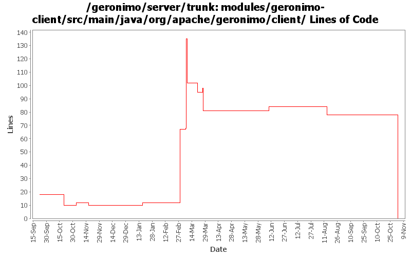

[root]/modules/geronimo-client/src/main/java/org/apache/geronimo/client

| Author | Changes | Lines of Code | Lines per Change |
|---|---|---|---|
| Totals | 35 (100.0%) | 237 (100.0%) | 6.7 |
| djencks | 14 (40.0%) | 213 (89.9%) | 15.2 |
| jlaskowski | 2 (5.7%) | 12 (5.1%) | 6.0 |
| dain | 2 (5.7%) | 6 (2.5%) | 3.0 |
| kevan | 9 (25.7%) | 3 (1.3%) | 0.3 |
| akulshreshtha | 2 (5.7%) | 2 (0.8%) | 1.0 |
| gawor | 1 (2.9%) | 1 (0.4%) | 1.0 |
| prasad | 5 (14.3%) | 0 (0.0%) | 0.0 |
GERONIMO-3565. Modules distributed amongst framework/modules and plugins
0 lines of code changed in 5 files:
GERONIMO-3407 stop using SubjectRegistrationLoginModule
2 lines of code changed in 1 file:
GERONIMO-2687. Don't construct default and run-as subjects, get them from a login module. Also creates a separate server-security-config for the security config stuff you probably want to change. Also fixes lots of security problems, including mdb run-as handling.
11 lines of code changed in 1 file:
list implements toString() so that displays nice error messages
1 lines of code changed in 1 file:
While investigating GERONIMO-3021 discovered that the app client was swallowing all info about injection problems
6 lines of code changed in 1 file:
Added OpenEJB security integration
3 lines of code changed in 1 file:
Cleanup AppClientContainer. loginContext should be private. Also, removed commented code that's no longer used
3 lines of code changed in 1 file:
GERONIMO-2940, GERONIMO-2887 More injection work for app client and jetty: lifecycle methods verified on app client. Ear lib dir available to app client. Also upgrade to jetty snapshot for jetty lifecycle method support
35 lines of code changed in 1 file:
GERONMO-2887 More work to on injections and lifecycle methods
94 lines of code changed in 1 file:
GERONIMO-2887 make app client injections actually work. Note xbean-reflect version has increased
2 lines of code changed in 1 file:
GERONIMO-2827 some ee5 app client support: no dd required and some injection support. Also better support for no dd in ears, and help ejb module builder not object if its given a non-ejb module. Also refactor some naming builder stuff
60 lines of code changed in 3 files:
GERONIMO-2744 expose loginContext so app client can log out programatically
3 lines of code changed in 1 file:
GERONIMO-2607 reverted 485524
1 lines of code changed in 1 file:
GERGERONIMO-2607 Updated all GBeans to use new GBeanInfoBuilder.addOperation(..) method
1 lines of code changed in 1 file:
GERONIMO-2537 Update the src headers in server/trunk/modules to be compliant with the new ASF src header and copyright policy (http://www.apache.org/legal/src-headers.html). I also did some cleanup of the src headers and tried to make them all a consistent format
0 lines of code changed in 8 files:
Partial fix for GERONIMO-2537 All Geronimo source files must be brought in line with the new ASF source header and copyright notice policy
The modules directory is supposed to be migrated. There're some issues with some files, but they'll be handled manually
12 lines of code changed in 2 files:
Fixed GERONIMO-2508 An empty enterprise naming context does not cotain a context at java:comp/env by adding an empty env context to the ENC if no env bindings are present in the context map
3 lines of code changed in 1 file:
GERONIMO-2153 install jndi on the app client
0 lines of code changed in 2 files:
GERONIMO-2427. Make ref builders accept either j2ee 1.4 or jee5 deployment descriptor xml
0 lines of code changed in 2 files: